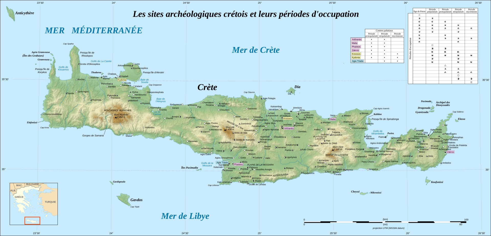
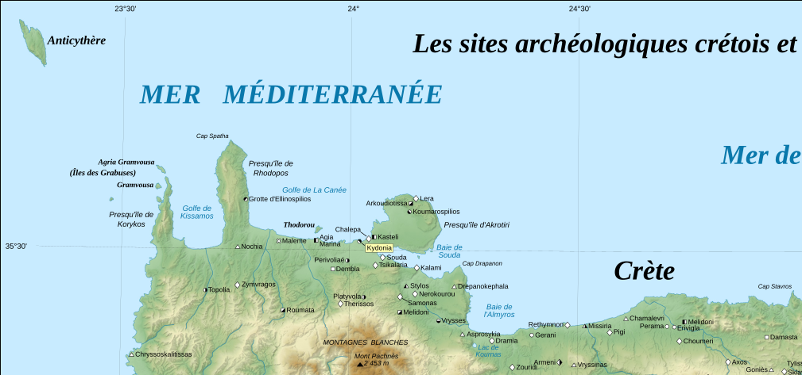
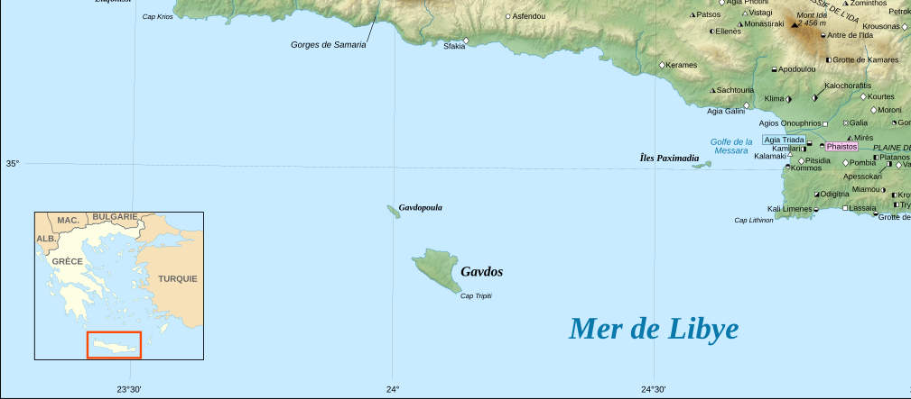
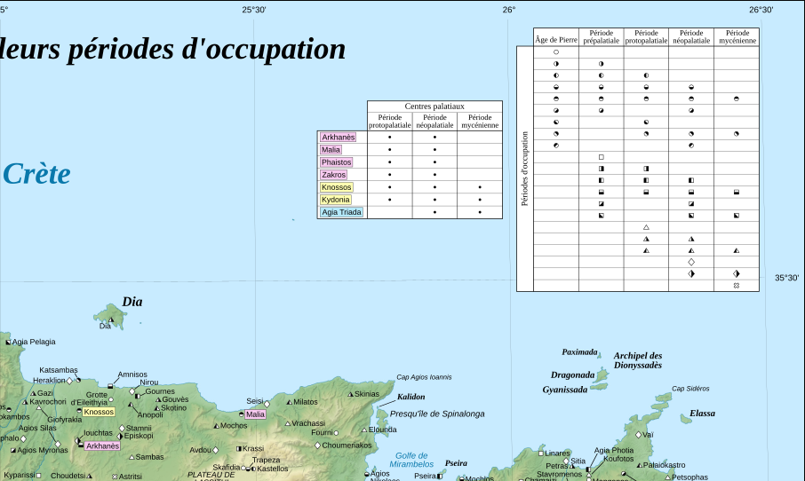
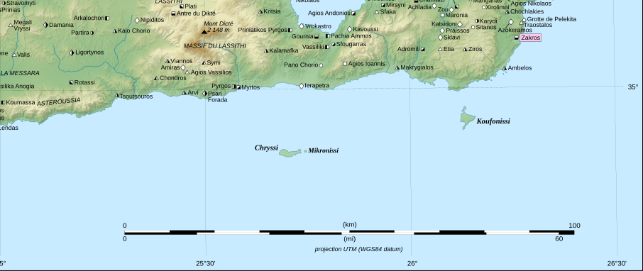

Crete exploration
Ruth's reccomendations: 'phaistos and agia triada are really nice
and like you can just walk between the two
i would really recommend phourni cemetery near archanes too - is a bit of a walk and like the entrance is not immediately apparent
but it is
so exciting to explore
i didn't go to akrotiri but i know i will said it was like fantastic but really busy
-anemospilia in walking distance of Archanes. and psychro cave?
-ketal busses going to east crete?
    